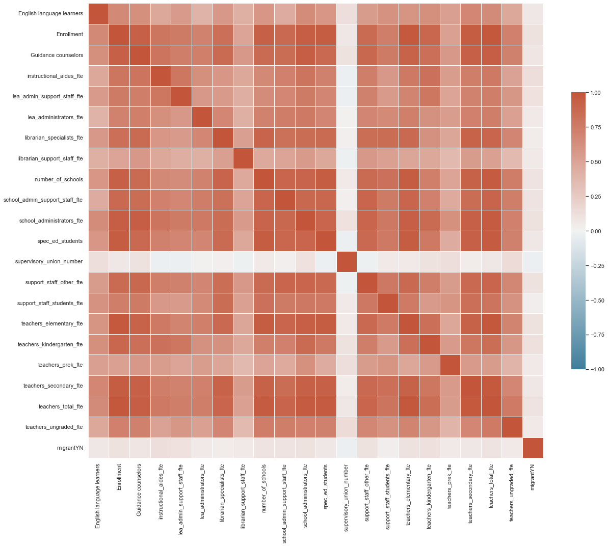
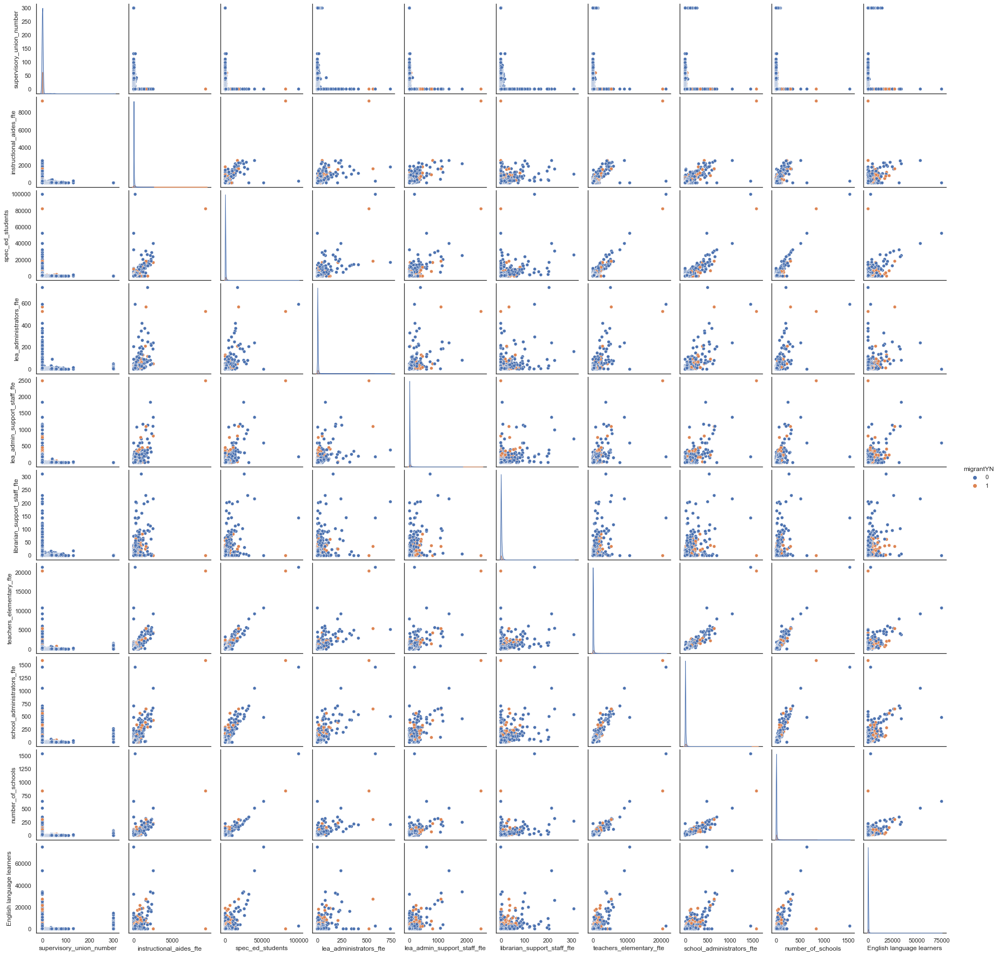
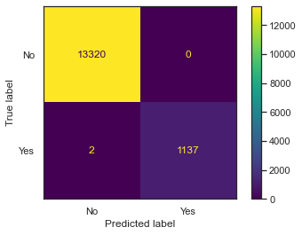
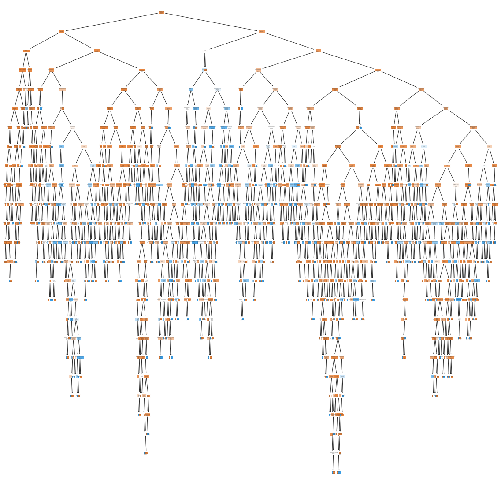
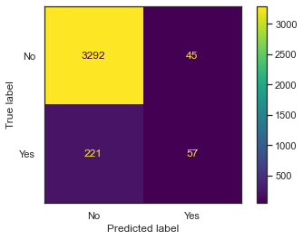
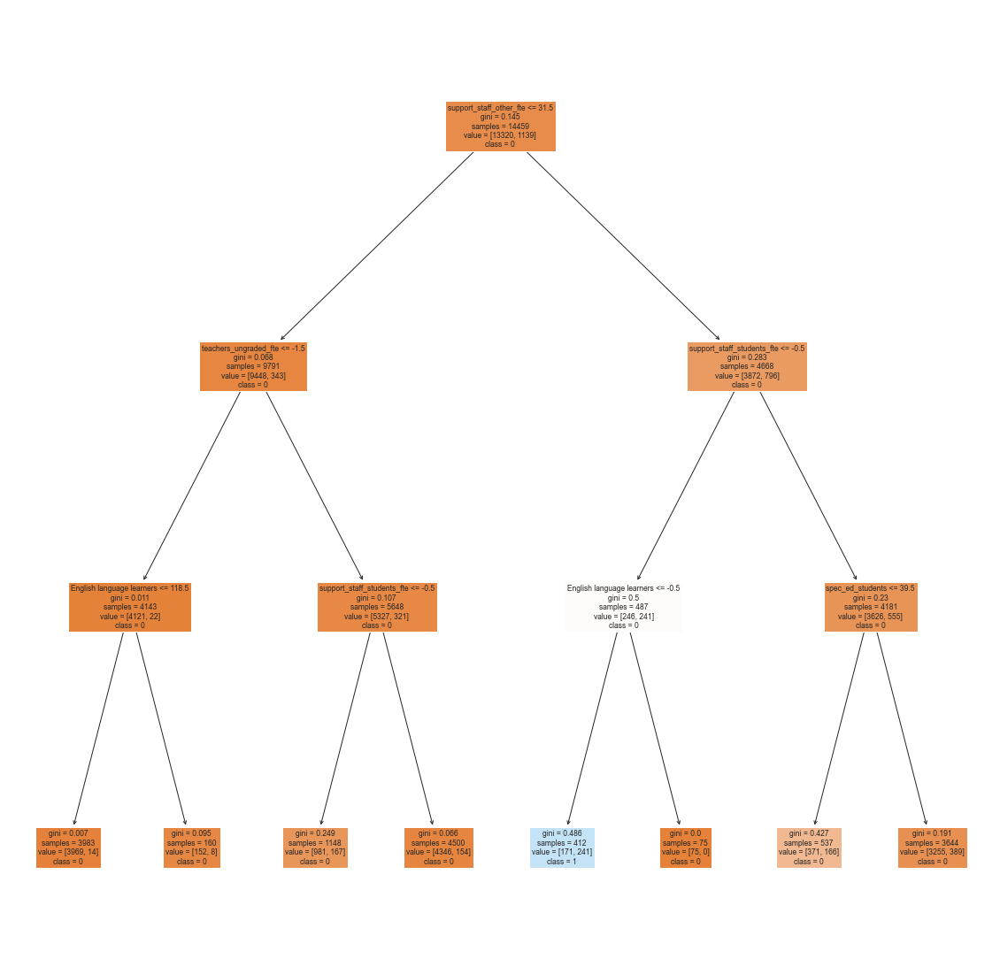
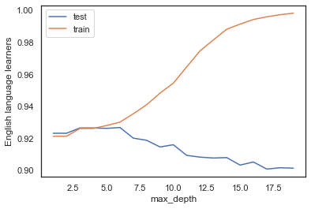
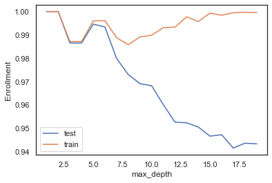
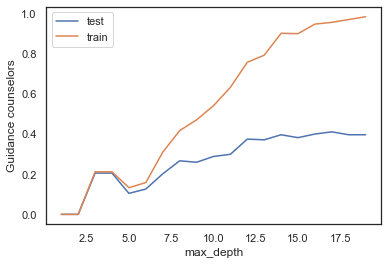

import pandas as pd
import seaborn as sns
import matplotlib.pyplot as plt
from sklearn import tree
from IPython.display import Image
import numpy as np
from sklearn.metrics import accuracy_score
from sklearn.metrics import precision_score
from sklearn.metrics import recall_score
from sklearn.model_selection import train_test_splitImport Relevant Libraries
Import Data
The following code will import the data file into a pandas data-frame
# LOAD THE DATAFRAME
# open csv
df = pd.read_csv('/Users/katherinemead/Documents/GitHub/anly-501-project-kam515/501-project-website/codes/Migrant_Dataset.csv')
# look at first row
print(df.iloc[0])English language learners -1
Enrollment 71
Guidance counselors -1
instructional_aides_fte -1
lea_admin_support_staff_fte -1
lea_administrators_fte -1
librarian_specialists_fte -1
librarian_support_staff_fte -1
number_of_schools 7
other_staff_fte 0
school_admin_support_staff_fte -1
school_administrators_fte -1
school_counselors_fte 0
school_psychologists_fte 0
school_staff_total_fte 0
spec_ed_students 72
supervisory_union_number 0
support_staff_other_fte -1
support_staff_stu_wo_psych_fte 0
support_staff_students_fte -1
teachers_elementary_fte -1
teachers_kindergarten_fte -1
teachers_prek_fte -1
teachers_secondary_fte -1
teachers_total_fte -1
teachers_ungraded_fte -2
migrantYN No
Name: 0, dtype: object# INSERT CODE TO PRINT ITS SHAPE AND COLUMN NAMES
print(df.shape)
print(df.columns)(18074, 27)
Index(['English language learners', 'Enrollment', 'Guidance counselors',
'instructional_aides_fte', 'lea_admin_support_staff_fte',
'lea_administrators_fte', 'librarian_specialists_fte',
'librarian_support_staff_fte', 'number_of_schools', 'other_staff_fte',
'school_admin_support_staff_fte', 'school_administrators_fte',
'school_counselors_fte', 'school_psychologists_fte',
'school_staff_total_fte', 'spec_ed_students',
'supervisory_union_number', 'support_staff_other_fte',
'support_staff_stu_wo_psych_fte', 'support_staff_students_fte',
'teachers_elementary_fte', 'teachers_kindergarten_fte',
'teachers_prek_fte', 'teachers_secondary_fte', 'teachers_total_fte',
'teachers_ungraded_fte', 'migrantYN'],
dtype='object')# drop the columns with 0
df = df.drop(['other_staff_fte'], axis=1)
df = df.drop(['school_counselors_fte'], axis=1)
df = df.drop(['school_psychologists_fte'], axis=1)
df = df.drop(['school_staff_total_fte'], axis=1)
df = df.drop(['support_staff_stu_wo_psych_fte'], axis=1)
# Change YN to 1 and 0
df['migrantYN'] = df['migrantYN'].replace(['Yes'], 1)
df['migrantYN'] = df['migrantYN'].replace(['No'], 0)
Basic data exploration
#INSERT CODE TO PRINT THE FOLLOWING DATA-FRAME WHICH SUMMARIZES EACH COLUMN
#(MEAN, MIN, MAX, STD, COUNT)
print(df.describe()) English language learners Enrollment Guidance counselors \
count 18074.000000 18074.000000 18074.000000
mean 142.441463 2755.762532 5.585814
std 1170.230726 11316.841348 23.978023
min -2.000000 -2.000000 -2.000000
25% -1.000000 173.000000 0.000000
50% 0.000000 668.000000 1.000000
75% 19.750000 2176.750000 4.000000
max 75108.000000 693680.000000 1132.000000
instructional_aides_fte lea_admin_support_staff_fte \
count 18074.000000 18074.000000
mean 38.477481 9.403231
std 131.791561 43.984684
min -2.000000 -2.000000
25% 0.000000 0.000000
50% 8.000000 2.000000
75% 32.000000 7.000000
max 9303.000000 2485.000000
lea_administrators_fte librarian_specialists_fte \
count 18074.000000 18074.000000
mean 3.055771 2.760097
std 13.529293 13.465716
min -2.000000 -2.000000
25% 0.000000 0.000000
50% 1.000000 1.000000
75% 3.000000 2.000000
max 743.000000 1134.000000
librarian_support_staff_fte number_of_schools \
count 18074.000000 18074.000000
mean 1.338663 5.716056
std 7.543327 19.419574
min -2.000000 -2.000000
25% -1.000000 1.000000
50% 0.000000 3.000000
75% 1.000000 5.000000
max 311.000000 1536.000000
school_admin_support_staff_fte ... supervisory_union_number \
count 18074.000000 ... 18074.000000
mean 13.318469 ... 1.925362
std 71.637051 ... 15.631898
min -2.000000 ... -2.000000
25% 0.000000 ... 0.000000
50% 2.000000 ... 0.000000
75% 10.000000 ... 0.000000
max 5334.000000 ... 301.000000
support_staff_other_fte support_staff_students_fte \
count 18074.000000 18074.000000
mean 62.278798 12.272546
std 282.618513 54.556796
min -2.000000 -2.000000
25% 0.000000 0.000000
50% 11.000000 2.000000
75% 47.000000 9.000000
max 16844.000000 3703.000000
teachers_elementary_fte teachers_kindergarten_fte teachers_prek_fte \
count 18074.000000 18074.000000 18074.000000
mean 80.506473 8.886024 1.991092
std 346.604462 37.443712 11.904970
min -2.000000 -2.000000 -2.000000
25% 5.000000 0.000000 -1.000000
50% 19.000000 2.000000 0.000000
75% 60.000000 7.000000 1.000000
max 21335.000000 2598.000000 656.000000
teachers_secondary_fte teachers_total_fte teachers_ungraded_fte \
count 18074.000000 18074.000000 18074.000000
mean 70.073697 175.040777 10.690550
std 257.008640 692.911902 85.620405
min -2.000000 -2.000000 -2.000000
25% 1.000000 15.000000 -2.000000
50% 20.000000 49.000000 0.000000
75% 60.000000 143.000000 4.000000
max 14017.000000 40826.000000 5452.000000
migrantYN
count 18074.000000
mean 0.078400
std 0.268807
min 0.000000
25% 0.000000
50% 0.000000
75% 0.000000
max 1.000000
[8 rows x 22 columns]# INSERT CODE TO EXPLORE THE LOAD BALANCE AND COUNT THE NUMBER OF SAMPLES FOR EACH TARGET (THEN PRINT THE RESULT)
print(df['migrantYN'].value_counts())0 16657
1 1417
Name: migrantYN, dtype: int64# RUN THE FOLLOWING CODE TO SHOW THE HEAT-MAP FOR THE CORRELATION MATRIX
corr = df.corr(); #print(corr) #COMPUTE CORRELATION OF FEATER MATRIX
print(corr.shape)
sns.set_theme(style="white")
f, ax = plt.subplots(figsize=(20, 20)) # Set up the matplotlib figure
cmap = sns.diverging_palette(230, 20, as_cmap=True) # Generate a custom diverging colormap
# Draw the heatmap with the mask and correct aspect ratio
sns.heatmap(corr, cmap=cmap, vmin=-1, vmax=1, center=0,
square=True, linewidths=.5, cbar_kws={"shrink": .5})
plt.show();(22, 22)
When the dataset is very large then the seaborn pairplot is often very slow.
However, in this case it can still be useful to look at a subset of the features
# # RUN THE FOLLOWING CODE TO GENERATE A SEABORN PAIRPLOT
# save complete df for later
df_complete = df
# name migrantYN as Y variable
y = df['migrantYN']
y = df['migrantYN']
df=df.drop(['migrantYN'], axis=1)
# split into train and test sets
x_train, x_test, y_train, y_test = train_test_split(df, y, test_size=0.2, random_state=42)
tmp=pd.concat([df.sample(n=10,axis=1),y],axis=1)
print(tmp.shape)
sns.pairplot(tmp,hue="migrantYN", diag_kind='kde')
plt.show()(18074, 11)
#### Isolate inputs/output & Split data
# INSERT CODE TO MAKE DATA-FRAMES (or numpy arrays) (X,Y) WHERE Y="target" COLUMN and X="everything else"
dfx = df_complete.drop(columns=['migrantYN'])
dfy = df_complete['migrantYN']# INSERT CODE TO PARTITION THE DATASET INTO TRAINING AND TEST SETS
from sklearn.model_selection import train_test_split
X_train, X_test, y_train, y_test = train_test_split(dfx, dfy, test_size=0.2, random_state=42)# INSERT CODE, AS A CONSISTENCY CHECK, TO PRINT THE TYPE AND SHAPE OF x_train, x_test, y_train, y_test
print(type(X_train))
print(X_train.shape)
print(type(X_test))
print(X_test.shape)
print(type(y_train))
print(y_train.shape)
print(type(y_test))
print(y_test.shape)<class 'pandas.core.frame.DataFrame'>
(14459, 21)
<class 'pandas.core.frame.DataFrame'>
(3615, 21)
<class 'pandas.core.series.Series'>
(14459,)
<class 'pandas.core.series.Series'>
(3615,)#### Training the model
#### INSERT CODE BELOW TO TRAIN A SKLEARN DECISION TREE MODEL ON x_train,y_train
from sklearn import tree
model = tree.DecisionTreeClassifier()
model = model.fit(X_train,y_train)#### Check the results
Evaluate the performance of the decision tree model by using the test data.
# INSERT CODE TO USE THE MODEL TO MAKE PREDICTIONS FOR THE TRAINING AND TEST SET
yp_train = model.predict(X_train)
yp_test = model.predict(X_test)Use the following reference to display the confusion matrix. SKlearn Confusion Matrix will give you the code you need.
In the function below, also print the following as part of the function output ACCURACY: 0.9035087719298246 NEGATIVE RECALL (Y=0): 0.9574468085106383 NEGATIVE PRECISION (Y=0): 0.8333333333333334 POSITIVE RECALL (Y=1): 0.8656716417910447 POSITIVE PRECISION (Y=1): 0.9666666666666667 [[45 2] [ 9 58]]
#INSERT CODE TO WRITE A FUNCTION def confusion_plot(y_data,y_pred) WHICH GENERATES A CONFUSION MATRIX PLOT AND PRINTS THE INFORMATION ABOVE (see link above for example)
def confusion_plot(y_data,y_pred):
from sklearn.metrics import confusion_matrix
from sklearn.metrics import ConfusionMatrixDisplay
cm = confusion_matrix(y_data,y_pred)
disp = ConfusionMatrixDisplay(confusion_matrix=cm,display_labels=['No','Yes'])
disp.plot()
plt.show()
print("Accuracy: ",accuracy_score(y_data,y_pred))
print("Precision: ",precision_score(y_data,y_pred))
print("Recall: ",recall_score(y_data,y_pred))# RUN THE FOLLOWING CODE TO TEST YOUR FUNCTION
print("------TRAINING------")
confusion_plot(y_train,yp_train)
print("------TEST------")
confusion_plot(y_test,yp_test)------TRAINING------
Accuracy: 0.9998616778477073
Precision: 1.0
Recall: 0.9982440737489026
------TEST------Accuracy: 0.9001383125864454
Precision: 0.36482084690553745
Recall: 0.4028776978417266#### Visualize the tree
# INSERT CODE TO WRITE A FUNCTION "def plot_tree(model,X,Y)" VISUALIZE THE DECISION TREE (see https://mljar.com/blog/visualize-decision-tree/ for an example)
def plot_tree(model,X,Y):
from sklearn import tree
plt.figure(figsize=(20,20))
tree.plot_tree(model,feature_names=X.columns,class_names=['0','1'],filled=True)
plt.show()
plot_tree(model, X_train, y_train)
# TESTING BY HARD-CODING MAX DEPTH
model = tree.DecisionTreeClassifier(max_depth=3)
model = model.fit(X_train,y_train)
yp_train = model.predict(X_train)
yp_test = model.predict(X_test)
print("------TRAINING------")
confusion_plot(y_train,yp_train)
print("------TEST------")
confusion_plot(y_test,yp_test)
plot_tree(model, X_train, y_train)------TRAINING------
Accuracy: 0.9260668095995573
Precision: 0.5849514563106796
Recall: 0.2115891132572432
------TEST------
Accuracy: 0.926417704011065
Precision: 0.5588235294117647
Recall: 0.20503597122302158
#### Hyper-parameter turning
The “max_depth” hyper-parameter lets us control the number of layers in our tree.
Lets iterate over “max_depth” and try to find the set of hyper-parameters with the lowest training AND test error.
# COMPLETE THE FOLLOWING CODE TO LOOP OVER POSSIBLE HYPER-PARAMETERS VALUES
test_results=[]
train_results=[]
for num_layer in range(1,20):
model = tree.DecisionTreeClassifier(max_depth=num_layer)
model = model.fit(X_train,y_train)
yp_train=model.predict(X_train)
yp_test=model.predict(X_test)
# print(y_pred.shape)
test_results.append([num_layer,accuracy_score(y_test, yp_test),recall_score(y_test, yp_test,pos_label=0),recall_score(y_test, yp_test,pos_label=1)])
train_results.append([num_layer,accuracy_score(y_train, yp_train),recall_score(y_train, yp_train,pos_label=0),recall_score(y_train, yp_train,pos_label=1)])
# INSERT CODE TO GENERATE THE THREE PLOTS BELOW (SEE EXPECTED OUTPUT FOR EXAMPLE)
# NOTE: THERE IS A TYPO IN THE THIRD PLOT, IT SHOULD BE RECALL IN THE Y-AXIS LABEL NOT ACCURACY
# PLOT 1: ACCURACY VS MAX_DEPTH
plt.plot([x[0] for x in test_results],[x[1] for x in test_results],label='test')
plt.plot([x[0] for x in train_results],[x[1] for x in train_results],label='train')
plt.xlabel('max_depth')
plt.ylabel('English language learners')
plt.legend()
plt.show()
# PLOT 2: RECALL (BENIGN) VS MAX_DEPTH
plt.plot([x[0] for x in test_results],[x[2] for x in test_results],label='test')
plt.plot([x[0] for x in train_results],[x[2] for x in train_results],label='train')
plt.xlabel('max_depth')
plt.ylabel('Enrollment')
plt.legend()
plt.show()
# PLOT 3: RECALL (MALIGNANT) VS MAX_DEPTH
plt.plot([x[0] for x in test_results],[x[3] for x in test_results],label='test')
plt.plot([x[0] for x in train_results],[x[3] for x in train_results],label='train')
plt.xlabel('max_depth')
plt.ylabel('Guidance counselors')
plt.legend()
plt.show()


#### Train optimal model
Re-train the decision tree using the optimal hyper-parameter obtained from the plot above
#### COMPLETE THE CODE BELOW TO TRAIN A SKLEARN DECISION TREE MODEL ON x_train,y_train
from sklearn import tree
model = tree.DecisionTreeClassifier(max_depth=3)
model = model.fit(X_train,y_train)
yp_train=model.predict(X_train)
yp_test=model.predict(X_test)# RUN THE FOLLOWING CODE TO EVALUATE YOUR MODEL
print("------TRAINING------")
confusion_plot(y_train,yp_train)
print("------TEST------")
confusion_plot(y_test,yp_test)
plot_tree(model,dfx,dfy)------TRAINING------Accuracy: 0.9260668095995573
Precision: 0.5849514563106796
Recall: 0.2115891132572432
------TEST------
Accuracy: 0.926417704011065
Precision: 0.5588235294117647
Recall: 0.20503597122302158